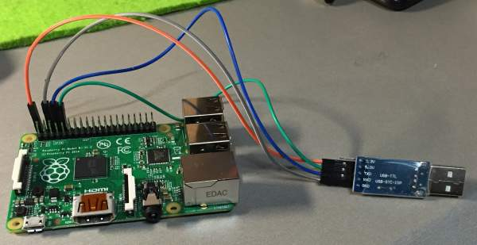
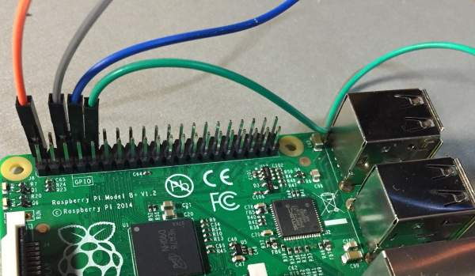
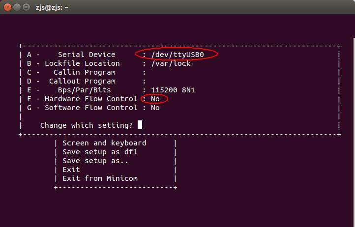
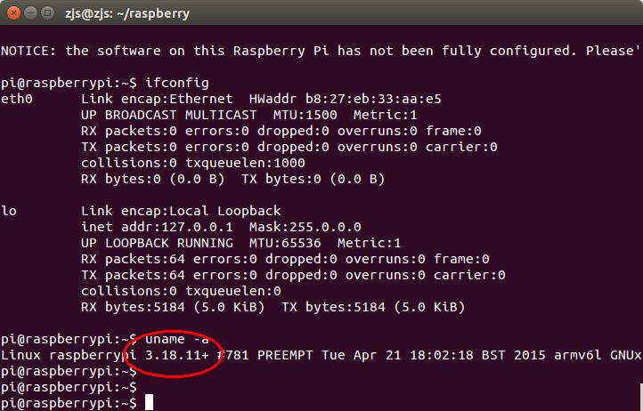
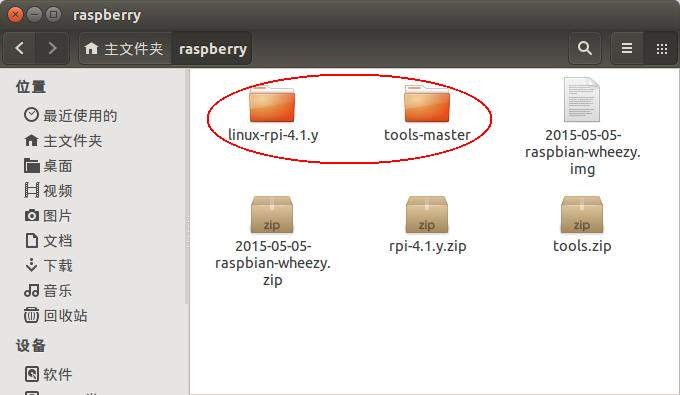
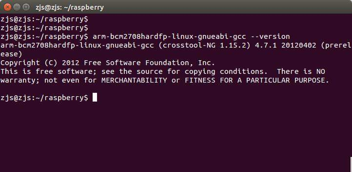
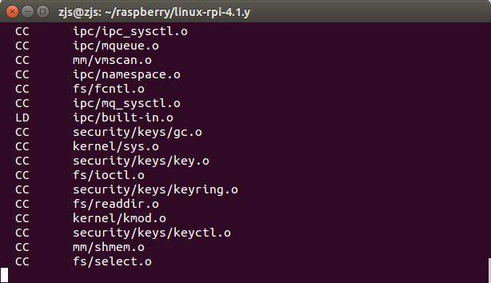
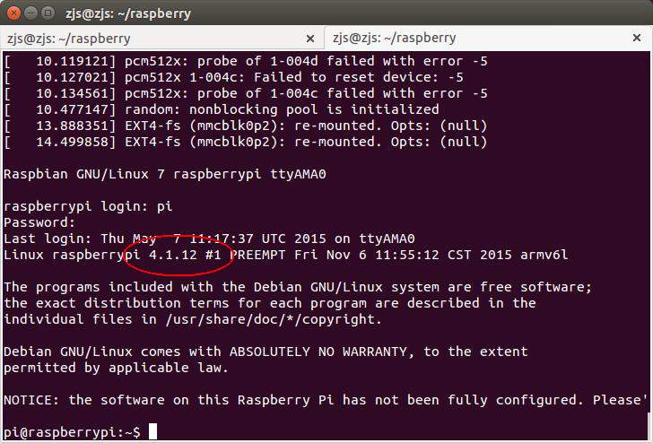

想为树莓派重新编译内核，以支持一些新的硬件驱动和内核特性。
其实编译linux内核的事情，在《从零开始构建linux（一）——编译linux内核》中已经讲的比较详细了。但是，由于树莓派的特殊性，他的linux源码是需要修改的。当然，好在树莓派社区已经为我们修改好了，我们不需要自己修改即可使用。
本文针对的情况是，之前已经在SD卡中安装好了树莓派的操作系统，然后想要替换linux内核，以支持新的硬件驱动和内核特性，而不是从零开始构建。
并且需要说明的是，我用的是raspberry 2 B+版本的板子。其他板子未经测试。
为了演示方便，我还是从安装树莓派官方的操作系统讲起。
=====================阶段一：安装官方操作系统====================
首先下载官方的操作系统镜像2015-05-05-raspbian-wheezy.zip，然后解压：
cd ~ mkdir raspberry cd raspberry wget https://downloads.raspberrypi.org/raspbian/images/raspbian-2015-05-07/2015-05-05-raspbian-wheezy.zip unzip 2015-05-05-raspbian-wheezy.zip
等解压完以后，可以发现目录中有一个2015-05-05-raspbian-wheezy.img的磁盘镜像文件。
使用读卡器把SD卡连接至电脑，使用dd命令把2015-05-05-raspbian-wheezy.img直接写入SD卡中：
sudo umount /dev/sdb1 sudo umount /dev/sdb2 sudo dd if=2015-05-05-raspbian-wheezy.img of=/dev/sdb bs=4M
至于到底是/dev下的哪个设备，可以通过磁盘工具查看磁盘大小来判断。千万不要弄错了，不然可能把电脑硬盘给写了，这样就得重装系统了。另外，/dev/sdb有几个分区就umount几个分区，放置dd命令写入过程在造成干扰。
dd命令执行时间非常的久，而且还没有任何输出提示。如果实在想看看dd到底复制进去多少了，可以另外开一个终端，然后输入命令：
sudo pkill -USR1 ^dd$
然后即可在执行dd命令的那个终端中看见dd的进度信息，如下：


等dd复制完以后，使用umount命令把SD卡上的两个分区都给卸载掉，以安全地弹出SD卡：
sync sudo umount /dev/sdb1 sudo umount /dev/sdb2
至于为什么有这两个分区，是因为这个img磁盘镜像文件里面有这两个分区，第一个分区在树莓派中被挂载为/boot，里面装的是各种bootloader和linux内核等，而第二个分区在树莓派中被挂载为/，里面就是各种linux运行时需要的文件了。
最后把SD卡插入树莓派。
此时，树莓派只要一上电就能开机运行了。
=====================阶段二：使用串口访问树莓派======================
虽然树莓派能够运行了，但是没有鼠标键盘显示器，既不能看又不能输入，运行了又能怎样？！
网上有各种使用ssh和vnc来远程访问树莓派的例子，那些我都试过，确实好使，但是不够直观。况且，如果没有路由器，或者不能登录路由器去查看dhcp客户端列表，如何才能得知树莓派的IP地址，没有IP地址又哪来的ssh和vnc。
其实，类似于各种单片机，作为嵌入式系统，树莓派是有串口的。当系统启动时，该串口被linux命名为/dev/ttyAMA0，并且是作为默认的终端与外界通讯的。所以通过把树莓派的串口与电脑的串口（或USB转串口）连接起来，就可以使用电脑来访问树莓派了。
通过GPIO上的串口与电脑相连来使用树莓派，连线如图：

如图中这样放置raspberry b+时，外侧左边第1个引脚是5v电源线，外侧左边第3个引脚是GND地线，外侧左边第4个引脚是TX串口发送线，外侧左边第5个引脚是RX串口接收线，放大后如图：

所以橙色线接USB转串口的5V引脚，灰色线接USB转串口的GND地线，蓝色线接USB转串口的RX串口接受引脚（树莓派的TX接PC的RX），绿色线接USB转串口的TX串口发送引脚（树莓派的RX接PC的TX），如图：

在运行树莓派之前，还需要安装minicom，这是一个串口通讯软件，类似于windows上的超级终端：
sudo apt-get install minicom
安装好之后还需要配置一下：
sudo minicom -s
选择“Serial port setup”：

在Serial Device中填写”/dev/ttyUSB0″（如果插入USB转串口模块后不是ttyUSB0，要做相应修改），在Hardware Flow Control中选择”No”：

退出后，选择”Save setup as dfl”，这样以后就会把刚刚的设置当作默认设置了：

保存之后，就可以使用minicom操作串口了！
先把USB转串口插入电脑，此时树莓派已经上电启动了，所以要立即运行命令：
sudo minicom
于是可以看到壮观的一幕：


这是树莓派中的Linux启动过程中打印出来的信息。而且请注意，最后还出现了登录提示“raspberrypi login:”～～～
帐号是pi，密码是raspberry。
输入后，正式进入shell命令提示符，还可以运行命令看看：

怎样，是不是很棒！
看清楚了，这里的内核版本是3.18.11+，这个从上图一进入shell时打印的信息可以看出，当然也可以执行：
uname -a
通过命令的结果看出，如图：

======================阶段三：编译并使用新的内核===================
OK，终于进入正题了，那就是编译新的linux内核并且使用它。
树莓派的linux内核是经过修改的，不能从kernel.org上下载，需要从树莓派的github上下载。
下载树莓派的linux内核：
cd ~/raspberry wget http://github.com/raspberrypi/linux/archive/rpi-4.1.y.zip jar xvf rpi-4.1.y.zip
这里需要注意一点，unzip解压zip格式的内核源码是有bug的，大概是因为unzip不能正确处理符号链接。经测试，jar命令是可以的。
下载制作内核镜像的工具，其中包括交叉编译工具：
wget http://github.com/raspberrypi/tools/archive/master.zip -O tools.zip unzip tools.zip
此时~/raspberry下面已经有了linux-rpi-4.1.y和tools-master两个目录了：

先设置好环境变量，把交叉编译器的路径加入PATH中：
PATH=$PATH:~/raspberry/tools-master/arm-bcm2708/arm-bcm2708hardfp-linux-gnueabi/bin
此时已经可以找到交叉编译器啦，比如arm-bcm2708hardfp-linux-gnueabi-gcc：

然后就可以开始编译工作了！
cd linux-rpi-4.1.y/ make ARCH=arm CROSS_COMPILE=arm-bcm2708hardfp-linux-gnueabi- bcmrpi_defconfig make ARCH=arm CROSS_COMPILE=arm-bcm2708hardfp-linux-gnueabi- -j4
接下来就是泡一杯咖啡慢慢等待编译完成咯：

完成后，要来制作内核镜像了。因为编译出来的linux内核的格式不是树莓派能够识别的格式（至于树莓派能够识别什么格式我也不清楚），所以需要另外处理一下：
cd ../tools-master/mkimage/ ./imagetool-uncompressed.py ../../linux-rpi-4.1.y/arch/arm/boot/Image
此时，在~/raspberry/tools-master/mkimg目录下，就多了一个kernel.img的文件。这个就是待会儿要放入SD卡的boot目录的内核镜像。
处理完内核之后，还需要处理模块，才能完成让新的内核和新的模块搭配起来运作。其实kernel.img很小，一般就几兆，而编译这么长时间，肯定不可能仅仅编译一个内核。嗯，说对了，其他时间都是在编译内核模块。所以，模块已经编译好了，只要提取出来就行：
cd ~/raspberry mkdir modules cd linux-rpi-4.1.y make modules_install ARCH=arm CROSS_COMPILE=arm-bcm2708hardfp-linux-gnueabi- INSTALL_MOD_PATH=../modules/
现在~/raspberry/modules里面就是新的内核需要用到的内核模块了。
最后一步，就是插上SD卡，然后开始替换文件！
假设插上SD卡之后，SD卡被命名为/dev/sdb，那么先挂载SD卡的两个分区：
cd ~/raspberry mkdir sd_boot sudo mount /dev/sdb1 sd_boot mkdir sd_root sudo mount /dev/sdb2 sd_root
然后就是替换里面的文件。先是内核：
sudo rm sd_boot/kernel.img sudo mv tools-master/mkimage/kernel.img sd_boot/
接着是替换内核模块：
sudo rm -rf sd_root/lib/modules/ sudo rm -rf sd_root/lib/firmware/ sudo cp -a modules/lib/modules/ sd_root/lib/ sudo cp -a modules/lib/firmware/ sd_root/lib/
最后卸载SD卡：
sync sudo umount sd_boot sudo umount sd_root
===================阶段四：享用新的内核===================
拔下SD卡，放入树莓派中，然后如同阶段二中描述的那样连接好串口，执行
sudo minicom
于是，又是熟悉的壮观的画面，而且请注意，内核版本号，是4.1.12了！！
